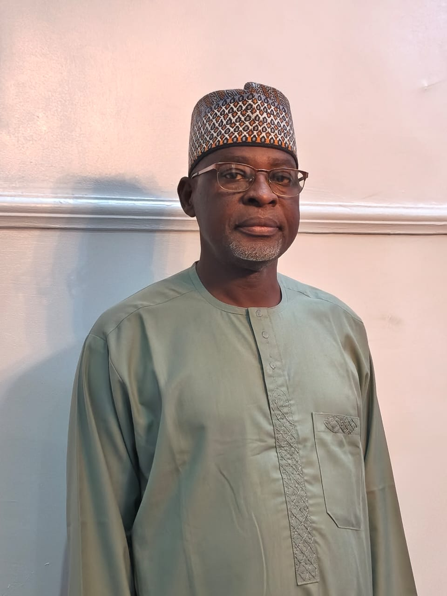
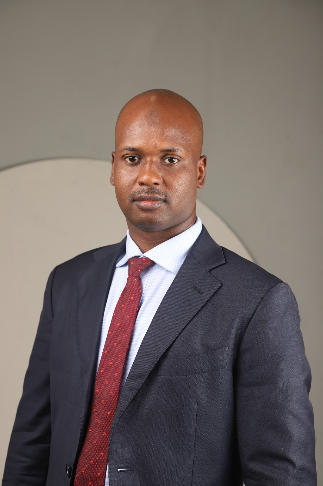

Leadership
Executive Management
Meet the executives guiding our technical metrics.

Mr. Abideen Olanrewaju Amusan
Managing Director/CEO

Mr. Haladou Zaneidou
Chief Technical Officer (CTO)

Mr. Abubakar Ahmed
Chief Corporate Services Officer (CCSO)
Mr. Biliyaminu Saad
Chief Commercial Officer (CCO)